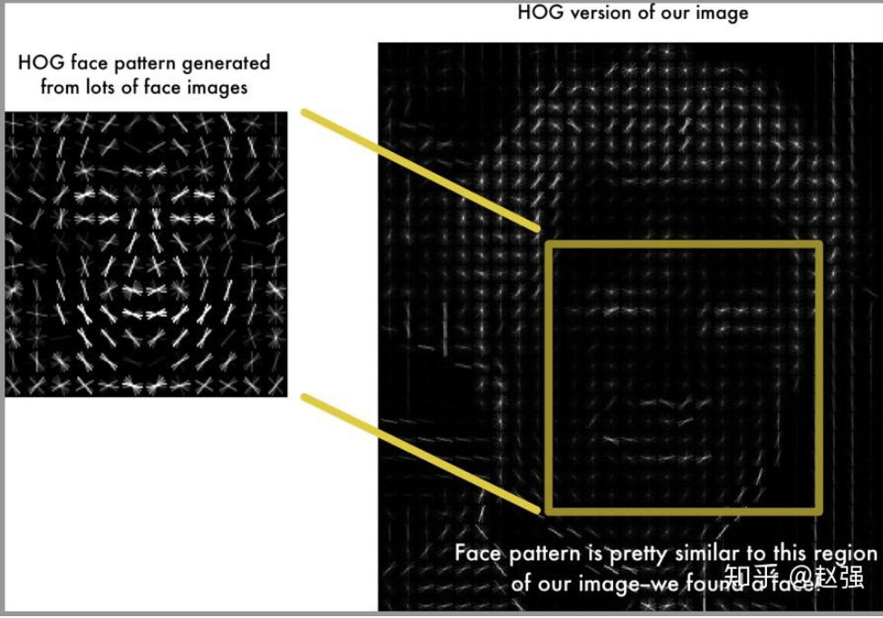

板子性能
首先看看板子的性能，确定后面模型算法的选择范围。
从硬件规格来看，Ti60F225板子的关键性能指标包括：
- 片上RAM（325KB） - 最高速缓存，用于实时计算
- HyperRAM（256Mbit=32MB） - 高速中等容量存储，可用于模型权重的快速访问
- DDR3（4GB或512MB） - 大容量主存储，用于模型、数据库和应用程序
- SPI Flash（128Mbit=16MB） - 非易失性存储，用于存储固件和持久化数据选择原则
类比电脑来看
| 名称 | 嵌入式/FPGA角色 | PC角色 | 用法 |
|---|---|---|---|
| DDR/SDRAM | 运行内存/工作区 | 电脑内存条（RAM） | 随意读写高速 |
| Flash/NAND | 固态/持久存储 | SSD/U盘/硬盘 | 存数据/代码 |
| 片上RAM | 高速缓存（KB级别） | CPU缓存（Cache） | 算法Buffer |
总结来说，我们能用的：
- 内存（跑模型算法的）： RAM 325KB + HyperRAM 32MB + DDR3 4GB或512MB
- 固态存储： Flash 16MB + 任意硬盘/U盘/SDcard X MB
所以一般的模型算法(~几百MB)都能使用，不用过度考虑内存问题。
为什么嵌入式和PC相比，固态存储这么小？
SPI Flash通常只是用来存放启动镜像、Bootloader、基础的程序等，实际上还需要插tf卡，或者sd卡，或者USB接入U盘。
备选指标
广义上来说，人脸识别分为人脸验证($1:1$)和人脸识别($1:N$)两部分。前者只需要根据给定的图片及名字信息来确认他个人的身份，而后者则需要将给定的图片和数据库里面的所有图片进行对比，找出最有可能的身份或确定是否在数据库里面。
我们要做的人脸识别技术就是后者。不幸的是，后者的难度远远大于前者。粗略估计，倘若对比一次的准确率为$n$，那么人脸验证的准确率为$n$，人脸识别的准确率为$n^k$，其中$k$为数据库里面所含有的图片数量（若$n=0.9,k=10$，那么$n^k = 0.3487$）。因此，我们要注重单次人脸识别的准确度，尽量保证在$0.9$以上。
另外，板子需要实时处理，对速度要求高。
除此之外，实现的复杂度、内存和是否CPU亲和也需要考虑。实现复杂度决定了我们能否顺利实现，依赖的环境复不复杂。内存虽然不用过度考虑，但是也不能用过大的模型算法。板子上面没有GPU，因此CPU亲和也非常重要。
人脸识别的主要阶段
在传统技术中，人脸识别系统通常包含以下四个核心阶段：
首先是人脸检测，这个阶段会在图像中定位人脸的位置，并输出人脸边界框。
然后是人脸对齐，这个阶段将检测人脸关键点，将人脸归一化到标准的位置和角度，例如偏脸变正脸。
其次是特征提取，这个阶段会从对齐后的人脸图像提取特征向量，生成能够代表个体身份的特征表示。
最后是特征匹配，这个阶段将提取的特征与数据库进行对比，完成身份识别。
简单来说，人脸识别的大致流程是这样的。人脸识别程序T运行在嵌入式设备的RTOS操作系统上面，通过RTOS的摄像外设驱动获取照片P，首先将照片P中可能的人类框选剪切出来(人脸检测)，然后将不同角度的人脸以一定的标准统一化(人脸对齐)，接着从统一后的人脸中提取特征，例如眼睛轮廓等(特征提取)，最后将提取特征的向量和数据库的进行对比，完成身份识别(特征匹配)。
（深度学习中，有一些模型能够实现端到端，例如把后面三个阶段直接压缩为一个阶段，这个之后再提）
各阶段的主要技术
人脸检测阶段
| 技术方法 | 速度 | 准确度 | 实现难度 | 内存需求 | 硬件要求 |
|---|---|---|---|---|---|
| 传统方法 | |||||
| Viola-Jones检测器 | ⭐⭐⭐⭐⭐ | ⭐⭐ | ⭐⭐ | ⭐ | ⭐ |
| HOG + SVM | ⭐⭐⭐ | ⭐⭐⭐ | ⭐⭐⭐ | ⭐⭐ | ⭐⭐ |
| DPM | ⭐⭐ | ⭐⭐⭐⭐ | ⭐⭐⭐⭐ | ⭐⭐⭐ | ⭐⭐⭐ |
| 深度学习方法 | |||||
| MTCNN | ⭐⭐⭐⭐ | ⭐⭐⭐⭐ | ⭐⭐⭐ | ⭐⭐⭐ | ⭐⭐⭐ |
| SSD-Face | ⭐⭐⭐⭐ | ⭐⭐⭐⭐ | ⭐⭐⭐ | ⭐⭐⭐⭐ | ⭐⭐⭐⭐ |
| YOLO-Face系列 | ⭐⭐⭐⭐⭐ | ⭐⭐⭐ | ⭐⭐ | ⭐⭐ | ⭐⭐ |
| RetinaFace | ⭐⭐⭐ | ⭐⭐⭐⭐⭐ | ⭐⭐⭐⭐ | ⭐⭐⭐⭐ | ⭐⭐⭐⭐ |
| DSFD | ⭐⭐ | ⭐⭐⭐⭐⭐ | ⭐⭐⭐⭐ | ⭐⭐⭐⭐⭐ | ⭐⭐⭐⭐⭐ |
| CenterFace | ⭐⭐⭐⭐⭐ | ⭐⭐⭐ | ⭐⭐ | ⭐⭐ | ⭐⭐ |
传统方法方面有三个技术可以使用
-
第一种可以实时处理并给出良好物体检出率的物体检测技术(虽然有点古老，2001年发表)，主要应用于人脸识别方面。通过分类器的级联来实现目标检测，对单个分类器的误检率要求非常宽容，但对检测率要求较高。
基于Haar特征和AdaBoost级联分类器。速度极快，可以实时，但准确率较差，需要正脸。
实现比较简单，可以直接调用opencv现成的库，并且内存需求几mb即可，对硬件要求低。
-
使用方向梯度直方图特征结合支持向量机。其原理类似于yolo的，但是机器学习。可用yolo取代。
速度中等，但是准确度比Viola-Jones高，实现需要理解HOG，没有现成的库调用。内存方面需求较低，几十mb即可，普通的CPU可以运行。
what is hog?
方向梯度直方图（Histogram of oriented gradient, HOG）,是抓取图像轮廓线条的算法，现将图片切成很多个区域（Cell）,从每个区域中找出方向梯度，并把它描绘出来，就形成了对象的轮廓，与其他边缘提取的算法比起来，它对环境的变化，如光线有较强的辨识能力。
使用方向梯度直方图(HOG)来检测人脸位置。先将图片灰度化，接着计算图像中像素的梯度。通过将图像转变成HOG形式，就可以获得人脸位置。
HOG有一个缺点：很难处理遮挡问题，人体姿势动作幅度过大或物体方向改变也不易检测。
-
DPM算法本身是一种基于组件的检测算法，对扭曲，性别，多姿态，多角度等的人脸都有非常好的检测效果。
DPM算法采用了改进后的HOG特征，SVM分类器和滑动窗口（Sliding Windows）检测思想(属于是前面一个的上位替代，除了速度和内存)。
速度较慢，准确度在传统方法里面最好，能够辨别变形的人脸，但是实现比较复杂，并且对内存有一定需求，比HOG+SVM需要更多的内存，但具体多少还不确定。
深度学习方法有六个可以选择
-
MTCNN(Multi-task convolutional neural network)
多阶段级联CNN，同时检测人脸和关键点。但如果后面使用端到端的模型，这里的关键点是没用的。
速度快，准确率高，有成熟实现，内存需求约50MB，属于是移动端实时人脸检测的首选（嵌入式也算？）。
-
基于SSD目标检测框架的人脸检测器。
单次前传检测所有人脸，速度较快，准确率高，有成熟实现，内存需求为100~200MB，建议使用GPU。
适合用于同时检测多个人脸的场景（众脸检测）。
-
著名人脸识别模型。
速度极快，准确率略有牺牲，框架成熟，容易部署。
内存方面取决于版本，tiny版本仅需20MB且CPU能跑，对于不同版本而言也有更小的。
也可以一次检测多个人脸，适合“众脸”的场景。
往年比赛有使用YOLO-v5的，因此可以作为备选。
-
速度中等，但准确率是目前所有模型中最优的。
实现需要多任务学习，比较复杂。内存方面需要200MB+，并且使用GPU。
适合于高精度的应用，例如人脸支付。但是不是很适合众脸识别的项目。
-
速度较慢，但准确率高，小脸检测能力强。
实现比较复杂，需要完成双路结构。内存方面需要300MB+，并且使用好的GPU。
适合远距离、小脸检测。
GPU+复杂实现+高内存+速度慢，不考虑备选。
-
速度极快，和YOLO相当，准确率中等。
基于CenterNet，易实现。并且内存方面要求不高，轻量级，<50MB。
对CPU友好，可以使用CPU顺利运行。
适合边缘设备、移动端，嵌入式设备本身就是边缘设备的一种？因此可以作为备选。
人脸对齐阶段
| 技术方法 | 速度 | 准确度 | 实现难度 | 内存需求 | 硬件要求 |
|---|---|---|---|---|---|
| 传统方法 | |||||
| ASM | ⭐⭐⭐ | ⭐⭐ | ⭐⭐⭐⭐ | ⭐⭐ | ⭐⭐ |
| AAM | ⭐⭐ | ⭐⭐⭐ | ⭐⭐⭐⭐⭐ | ⭐⭐⭐ | ⭐⭐⭐ |
| CLM | ⭐⭐⭐ | ⭐⭐⭐ | ⭐⭐⭐⭐ | ⭐⭐⭐ | ⭐⭐⭐ |
| SDM | ⭐⭐⭐⭐ | ⭐⭐⭐⭐ | ⭐⭐⭐ | ⭐⭐ | ⭐⭐ |
| 基于SIFT特征 | ⭐⭐ | ⭐⭐⭐ | ⭐⭐⭐ | ⭐⭐⭐ | ⭐⭐⭐ |
| 深度学习方法 | |||||
| DAN | ⭐⭐⭐⭐ | ⭐⭐⭐⭐ | ⭐⭐⭐ | ⭐⭐⭐ | ⭐⭐⭐ |
| MDM | ⭐⭐⭐ | ⭐⭐⭐⭐ | ⭐⭐⭐⭐ | ⭐⭐⭐⭐ | ⭐⭐⭐⭐ |
| FAN | ⭐⭐⭐ | ⭐⭐⭐⭐⭐ | ⭐⭐⭐⭐ | ⭐⭐⭐⭐ | ⭐⭐⭐⭐ |
| PRNet | ⭐⭐⭐ | ⭐⭐⭐⭐⭐ | ⭐⭐⭐⭐⭐ | ⭐⭐⭐⭐ | ⭐⭐⭐⭐ |
| 3DDFA | ⭐⭐⭐ | ⭐⭐⭐⭐⭐ | ⭐⭐⭐⭐ | ⭐⭐⭐⭐ | ⭐⭐⭐⭐ |
| HRNet | ⭐⭐⭐ | ⭐⭐⭐⭐⭐ | ⭐⭐⭐⭐ | ⭐⭐⭐⭐⭐ | ⭐⭐⭐⭐⭐ |
| PFLD | ⭐⭐⭐⭐⭐ | ⭐⭐⭐ | ⭐⭐ | ⭐ | ⭐ |
传统方法方面有五类方法
-
ASM主要是通过对形状向量的统计建模来控制合理的形状分布，同时每个单独特征点的局部梯度统计模型，用于在预测迭代时确定点的移动方向和位置。
速度迭代优化较慢，只考虑形状信息，准确率较低，并且实现非常复杂。
但是内存硬件需求较低。
属于是早期研究的产物(1995)，目前已很少使用。
-
AAM是一种广泛应用于人脸识别领域的技术。它通过分析人脸图像的几何形状和纹理信息，实现人脸对齐和特征提取。这里实现了两个阶段，但为方便起见，归类于首个阶段。
比ASM更慢，准确度高一点，实现更加复杂，计算量大。
属于是近期学术研究的产物，同样不适合使用。
-
速度中等，局部特征鲁棒性好，准确率良。
实现需要多个检测器，难度较高。并且网上搜索用的人较少，参考资料也较少。
貌似已经被CLNF取代。CLNF速度、准确率均优于CLM。
内存和硬件要求中等，可以使用cpu。
适合部分遮挡情况。不推荐使用。
-
一类机器学习的方法，通过回归的过程实现。对于一张给定的人脸，给出一个初始的形状，通过不断地迭代，将初始形状回归到接近甚至等于真实形状的位置。
速度快，准确率高，内存需求较小，CPU高效执行。
嵌入式设备的好选择，如果不用深度学习的话。可作为备选。
-
SIFT算法包括两个主要步骤：关键点检测和描述子生成。特征点的检测是指在图像中寻找具有代表性的点作为局部特征点，如角点、边缘、斑点等。这些特征点应具有良好的尺度不变性、旋转不变性和一定的亮度不变性。描述子的生成则是通过分析特征点周围的图像信息，构建一个高维的特征向量来描述每个特征点的局部特征。这使得即使在图像发生一定变化后，这些特征点的描述子仍然可以匹配到一起。
特征提取慢，但特征点匹配可靠。
内存需求中等，计算密集。
适合大姿态变化的场景。
深度学习方面有四类方法
-
高效CNN实现，速度较快，级联结构提升精度，准确率也较高。
实现难度中等，内存需求中等。但是硬件方面更适合用GPU。
适合通用。
-
沙漏结构，速度比DAN慢。但是准确率非常高。
内存需求非常大，所以别想了。适合高精度。
-
回归3D人脸位置图，适合3D信息的应用。速度慢，但是准确率高。
内存要求非常高且GPU必需，故不在考虑范围内。
-
专为速度优化，速度极快。速度优先，故准确率中等。
结构简单，内存需求<1MB，移动CPU可以跑。属于是移动端首选。
非常优秀的对齐模型，可作为备选。
特征提取阶段
| 技术方法 | 速度 | 准确度 | 实现难度 | 内存需求 | 硬件要求 |
|---|---|---|---|---|---|
| 传统方法 | |||||
| PCA/Eigenfaces | ⭐⭐⭐⭐ | ⭐⭐ | ⭐⭐ | ⭐⭐ | ⭐ |
| LDA/Fisherfaces | ⭐⭐⭐⭐ | ⭐⭐⭐ | ⭐⭐⭐ | ⭐⭐ | ⭐ |
| ICA | ⭐⭐⭐ | ⭐⭐⭐ | ⭐⭐⭐⭐ | ⭐⭐⭐ | ⭐⭐ |
| LBP | ⭐⭐⭐⭐⭐ | ⭐⭐⭐ | ⭐ | ⭐ | ⭐ |
| Gabor小波 | ⭐⭐ | ⭐⭐⭐⭐ | ⭐⭐⭐⭐ | ⭐⭐⭐⭐ | ⭐⭐⭐ |
| SIFT/SURF | ⭐⭐ | ⭐⭐⭐ | ⭐⭐⭐⭐ | ⭐⭐⭐ | ⭐⭐⭐ |
| HOG | ⭐⭐⭐⭐ | ⭐⭐⭐ | ⭐⭐ | ⭐⭐ | ⭐⭐ |
| LBPH | ⭐⭐⭐⭐⭐ | ⭐⭐⭐ | ⭐ | ⭐ | ⭐ |
| 深度学习方法 | |||||
| DeepFace | ⭐⭐⭐ | ⭐⭐⭐⭐ | ⭐⭐⭐⭐ | ⭐⭐⭐⭐ | ⭐⭐⭐⭐ |
| DeepID系列 | ⭐⭐⭐ | ⭐⭐⭐⭐ | ⭐⭐⭐ | ⭐⭐⭐ | ⭐⭐⭐⭐ |
| FaceNet | ⭐⭐⭐⭐ | ⭐⭐⭐⭐⭐ | ⭐⭐⭐ | ⭐⭐⭐ | ⭐⭐⭐⭐ |
| VGGFace/VGGFace2 | ⭐⭐⭐ | ⭐⭐⭐⭐ | ⭐⭐ | ⭐⭐⭐⭐ | ⭐⭐⭐⭐ |
| ResNet-Face | ⭐⭐⭐ | ⭐⭐⭐⭐⭐ | ⭐⭐⭐ | ⭐⭐⭐⭐ | ⭐⭐⭐⭐ |
| MobileFaceNet | ⭐⭐⭐⭐⭐ | ⭐⭐⭐ | ⭐⭐ | ⭐ | ⭐ |
| ArcFace | ⭐⭐⭐⭐ | ⭐⭐⭐⭐⭐ | ⭐⭐⭐⭐ | ⭐⭐⭐ | ⭐⭐⭐⭐ |
| CosFace | ⭐⭐⭐⭐ | ⭐⭐⭐⭐⭐ | ⭐⭐⭐⭐ | ⭐⭐⭐ | ⭐⭐⭐⭐ |
| SphereFace | ⭐⭐⭐⭐ | ⭐⭐⭐⭐ | ⭐⭐⭐⭐ | ⭐⭐⭐ | ⭐⭐⭐⭐ |
| ⭐⭐⭐⭐ | ⭐⭐⭐⭐⭐ | ⭐⭐⭐⭐ | ⭐⭐⭐ | ⭐⭐⭐⭐ |
传统方法有四个
-
老东西，1991年提出。借助 PCA 分析主要成分，对人脸数据进行降维，再进行相关计算，以减少复杂度。
降维后复杂度低，速度快。但是准确率低。
实现简单，内存需求少，可运行于CPU。
适合考古、教学，不适合人脸识别真正使用。
-
LDA与PCA实际上十分类似，LDA和PCA本质上都是对矩阵（人脸）进行降维，并且降维后仍然可以重建人脸。
它们的不同之处主要在于它们降维目的的不同，PCA降维是朝着”我要最小化重构误差“的思路去降维的，而PCA是朝着”我要最小化类内散度，最大化类间散度“的思路去降维的。换句话说，PCA是为了更好的压缩与重建，而LDA是为了更好地分类。
需要说明的是，LDA和PCA两种方法对光照都是比较敏感的，如果你用光照均匀的图像作为依据去判别非均匀的，那基本就惨了。
与PCA相比，速度同样快，准确度和数据库大小有关，但基本比PCA高。
实现需要类标签，比PCA复杂。内存硬件要求低。
适合小规模的人脸库。
-
LBP描述子不仅计算过程相对简单，而且产生的最终效果也不错，因而在学术界和工业界的很多领域都得到了较为广泛的应用。LDA和PCA都是从数据整体入手而不同于LBP提取局部纹理特征。
速度极快，并且准确率较高。实现简单，内存需求少。
非常适合于实时系统和嵌入式，加入备选。
-
受采集人脸图像时环境光照等因素影响，传统的代数算法很难达到较高识别率。Gabor 小波变换呈现为频率和方向的多尺度变换，并且与人类视觉感受野剖面非常相似，因此 Gabor 滤波器被用与提取图像局部纹理特征或对整体图像进行卷积得到 Gabor 滤波后的图像。
总而言之，该方法准确率很高，但是速度慢，内存要求高，计算复杂。
适合高精度，纹理敏感使用。
深度学习方面有四个
-
中等速度。准确率较高。但是实现难度高，内存需求大，GPU必需。直接排除。
注意：和github上的deepface项目不是同一个
-
FaceNet的核心思想是学习一个将人脸图像映射到特征向量的函数。Triplet Loss实现，经典的三元组损失。
速度快，准确率非常高。内存需求中等。适合工业级的应用。
-
mobilefacenet是运行在移动设备上的网络，单个网络模型只有4M并且有较高的准确率。
速度非常快，几乎实时。硬件要求非常低，手机可跑。自然也适合嵌入式环境，备选。
(不过大部分模型都用python跑，比较麻烦)
-
ArcFace、CosFace、SphereFace是用于人脸识别的先进损失函数，它们通过优化特征空间来提高识别精度。
推理高效，速度快。准确率当前最优。
但是实现非常复杂，并且网上没找到现成模型，资料少，内存需求大。适合高精度场景。
特征匹配与识别阶段
| 技术方法 | 速度 | 准确度 | 实现难度 | 内存需求 | 硬件要求 |
|---|---|---|---|---|---|
| 传统方法 | |||||
| 欧氏距离 | ⭐⭐⭐⭐⭐ | ⭐⭐⭐ | ⭐ | ⭐ | ⭐ |
| 马氏距离 | ⭐⭐⭐⭐ | ⭐⭐⭐ | ⭐⭐ | ⭐⭐ | ⭐ |
| 余弦相似度 | ⭐⭐⭐⭐⭐ | ⭐⭐⭐⭐ | ⭐ | ⭐ | ⭐ |
| Chi-squared距离 | ⭐⭐⭐⭐ | ⭐⭐⭐ | ⭐⭐ | ⭐ | ⭐ |
| SVM分类器 | ⭐⭐⭐ | ⭐⭐⭐⭐ | ⭐⭐⭐ | ⭐⭐⭐ | ⭐⭐ |
| 深度学习方法 | |||||
| Siamese网络 | ⭐⭐⭐⭐ | ⭐⭐⭐⭐ | ⭐⭐ | ⭐⭐⭐ | ⭐⭐⭐ |
| Triplet网络 | ⭐⭐⭐ | ⭐⭐⭐⭐⭐ | ⭐⭐⭐⭐ | ⭐⭐⭐⭐ | ⭐⭐⭐⭐ |
传统方法有三
-
欧式距离
经典求欧式距离，所有作差再平方。速度最快，准确率中等。
实现非常简单，并且几乎不占任何内存。
-
马氏距离
考虑特征协方差的距离。速度快，准确率中等。有一定的内存需求。
评价是不如欧式距离。
-
余弦相似度
余弦相似度是一种衡量两个向量在方向上相似程度的度量，其值域为 [-1, 1]。值越接近1，表示两个向量的方向越接近，即越相似。在人脸比对中，通常会将人脸图像转换为特征向量，然后利用余弦相似度计算这些向量之间的相似度，以此判断两张人脸是否相似。
速度极快，准确率比欧式距离法高。
同样实现简单，不占内存。
-
Chi-squared距离
适用于直方图特征。速度快，准确率一般。
实现有点难度，同样不如欧氏距离法。
-
SVM分类器
速度中等，准确率较高。但是机器学习，需要内存调优，并且占用一定量的内存。
麻烦，不考虑使用。
深度学习有二
-
这里仅仅用来对比特征数据流，后面会有别的用法。
单次比较快，准确率较高。实现结构简单，可以使用CPU。
-
Triplet网络是一种深度学习模型，主要用于解决样本类别多且训练数据集样本数少的情况，如人脸识别和人脸验证。它是Siamese网络的一种延伸，通过比较距离来学习有用的变量。
三路输入，所以速度一般，并且内存需求非常高，硬件要求高。但准确率最高。
组合方案（传统）
极简的嵌入方案
适合于单片机、早期嵌入式设备，可以给嵌入式设备简单测试视觉功能，但是不会参赛真正使用。准确率过低，不适用于众脸识别。
| 阶段 | 技术选择 | 理由 |
|---|---|---|
| 检测 | Viola-Jones | 速度极快，内存占用极小 |
| 对齐 | 简单几何归一化 | 仅做基本的眼睛定位和旋转校正 |
| 特征 | LBP | 计算简单，实时性好 |
| 匹配 | 欧氏距离 | 最简单快速 |
优势：可在8位/16位MCU上运行，总内存需求<10MB
劣势：只适合正面人脸，准确率有限（约70-80%）
平衡型传统方案
适用于中端嵌入式平台，准确率有所提升，但仍在90%以下，比较堪忧。
| 阶段 | 技术选择 | 理由 |
|---|---|---|
| 检测 | HOG + SVM | 准确度和速度的平衡 |
| 对齐 | SDM | 传统方法中最优，速度快 |
| 特征 | LBP + PCA | LBP提取纹理，PCA降维 |
| 匹配 | 余弦相似度 | 对特征归一化友好 |
优势：纯CPU实现，准确率可达85%左右
劣势：对光照变化敏感
高精度传统方案
适用于计算资源充足但不能使用深度学习的场景，实现复杂，速度慢，才仅仅90%准确率，不考虑使用。
| 阶段 | 技术选择 | 理由 |
|---|---|---|
| 检测 | DPM | 传统方法最准确 |
| 对齐 | AAM/CLM | 考虑纹理信息 |
| 特征 | Gabor + LDA | 多尺度特征+判别分析 |
| 匹配 | SVM | 复杂决策边界 |
优势：传统方法的极限，准确率可达90%
劣势：速度慢，实现复杂
组合方案（混合）
轻量级混合方案
适合移动设备、边缘计算设备，检测和对齐一体化，减少计算，特征质量高，模型小（<5MB），并且整体准确率>95%，可以作为备选。（只能说模型性能碾压算法）
| 阶段 | 技术选择 | 类型 | 理由 |
|---|---|---|---|
| 检测 | MTCNN | 深度学习 | 速度快，同时输出关键点 |
| 对齐 | 基于MTCNN关键点的仿射变换 | 传统方法 | 利用检测的副产品 |
| 特征 | MobileFaceNet | 深度学习 | 专为移动端设计 |
| 匹配 | 余弦相似度 | 传统方法 | 简单高效 |
速度优先混合方案
适合实时视频监控、高帧率要求场合，内存占用小，可达100+ FPS，可以作为备选。
| 阶段 | 技术选择 | 类型 | 理由 |
|---|---|---|---|
| 检测 | YOLO-Fastest | 深度学习 | 极速检测 |
| 对齐 | 跳过或简单归一化 | 传统方法 | 节省时间 |
| 特征 | LBP | 传统方法 | 毫秒级提取 |
| 匹配 | 哈希+汉明距离 | 传统方法 | 二进制匹配极快 |
精度优先混合方案
适用于门禁系统、支付认证这些高精度需求场合，准确率 > 99%，不过准确率这么高，有必要吗？
| 阶段 | 技术选择 | 类型 | 理由 |
|---|---|---|---|
| 检测 | RetinaFace | 深度学习 | 最高精度，处理困难情况 |
| 对齐 | SDM精细调整 | 传统方法 | 在深度学习基础上微调 |
| 特征 | ArcFace | 深度学习 | 当前最优特征 |
| 匹配 | 余弦相似度 + SVM验证 | 混合 | 双重验证提高安全性 |
大规模搜索方案
适合百万级人脸库搜索，对硬件要求高，CPU亲和性差，暂时不考虑。
| 阶段 | 技术选择 | 类型 | 理由 |
|---|---|---|---|
| 检测 | YOLO-Face | 深度学习 | 批量处理效率高 |
| 对齐 | 批量仿射变换 | 传统方法 | GPU并行（但也能CPU跑，不过速度会慢） |
| 特征 | FaceNet | 深度学习 | 紧凑的128维特征 |
| 匹配 | LSH + 余弦相似度 | 混合 | 先粗筛后精匹 |
端到端模型
所谓端到端就是指忽略中间步骤，直接从输入得到输出的过程。
例如传统人脸识别的后面三个阶段（人脸对齐，特征提取，特征匹配），都可以通过一个人脸图片比较模型来一次性完成。
例如Siamese检测网络（Siamese-YOLO），将监控图像和数据库图像同时输入，来得到它们的相似度矩阵，从而判断是否是同一个人。
跨阶段方案
YOLO-Face + ArcFace头
YOLO-Face用于人脸检测，ArcFace（通常指ArcFace loss头，或ArcFace模型）用于人脸特征提取和身份识别。
- 速度：40-50 FPS (GPU)，15-20 FPS (CPU)
- 准确率：检测 93%，识别 96%
- 模型大小：YOLOv5s版本约15MB，总体而言于几十MB这个量级
性能方面比较优秀，具体的实现流程也比较简单。
- 输入图片或视频帧。
- 用YOLO-Face检测所有人脸框。
- 对每一个人脸框，截取人脸区域，送入ArcFace模型提特征。
- ArcFace特征与已知身份的人脸特征库做余弦相似度或欧氏距离比对，找出最相似身份（或判定未知）。
- 在原图上标注识别结果。
Siamese + MTCNN
MTCNN是一个经典的人脸检测与对齐网络，只做检测、定位和人脸关键点，不识别身份。Siamese是一种度量学习方法，擅长进行相似/不同的二分类判断（即1:1比对），可用于面部验证，如A和B是不是同一个人。
- 速度：20-25 FPS
- 准确率：1:1验证 97%，1:N识别 92%
- 模型大小：MTCNN 2MB + Siamese 5MB，个位到十位的量级
Siamese-MTCNN能够实现特定人脸识别，但通常更适合于“是不是同一个人”（1:1核验），大规模1:N时效率一般。不考虑使用。
CenterFace + MobileFaceNet
CenterFace是一种轻量级人脸检测器，能快速准确检测人脸区域。MobileFaceNet是高效的人脸识别特征提取网络，用于提取人脸embedding，并进行身份比对，适合移动端部署。
- 速度：60+ FPS (移动GPU)
- 准确率：检测 91%，识别 93%
- 模型大小：总计不到5MB，个位到十位的量级
CenterFace和MobileFaceNet合起来，即：
- 用CenterFace检测人脸；
- 用MobileFaceNet提取每个人脸特征；
- 跟已有的人脸特征库比对，找出最相似的身份，实现特定身份的识别。
CenterFace + MobileFaceNet可以很好地实现特定人脸（1:N）识别，效率高，适合实际部署和移动端应用。
NanoDet + ShuffleFaceNet
NanoDet仅1.8MB，ShuffleFaceNet仅2MB，属于是超轻量的模型。适合极限嵌入式环境。
- 速度：80+ FPS (ARM CPU)
- 准确率：检测 85%，识别 88%
- 模型大小：总计<4MB，个位量级
板子应该没有这么小？所以不考虑。
选取的方案
综上来说，我考虑以下几种方案：
-
轻量级混合方案 (MTCNN + 仿射变换 + MobileFaceNet + 余弦相似度)
这个方案所用的模型小（<5MB），并且整体准确率>95%，速度快，适合嵌入式环境，但是要写一些算法，可能会导致工期变长，并且算法需要额外的FPGA优化，工作量更大。流程变长也意味着出现bug的可能性变大。
-
速度优先混合方案(YOLO-Fastest + 跳过或简单归一化 + LBP + 哈希-汉明距离)
准确率不高（但也不低），但速度很快，适用于实时监测，并且内存占用小。实际上是四个方案中最末的方案，不高准确率意味着人脸识别的效果不会很好，倘若嵌入环境比理论的更糟糕才考虑的方案。
-
YOLO-Face + ArcFace头
速度快，准确率达90%+，内存小，优秀的工作流。
两个都属于模型，方便FPGA统一优化，一旦完成了其中一个模型的执行流，另外一个也差不多了。
最推荐的方案，YOLO这些模型所用的领域非常广，因此各个方面对它的支持是最多的，开发起来最为便捷。
-
CenterFace + MobileFaceNet
同样速度快，准确率高，内存小，两个都属于模型，方便FPGA统一优化。
并且可以很好地实现特定人脸（1:N）识别，效率高，适合实际部署和移动端应用。
作为方案三的备选，有着和方案三差不多的效果。但是模型不如方案三知名。